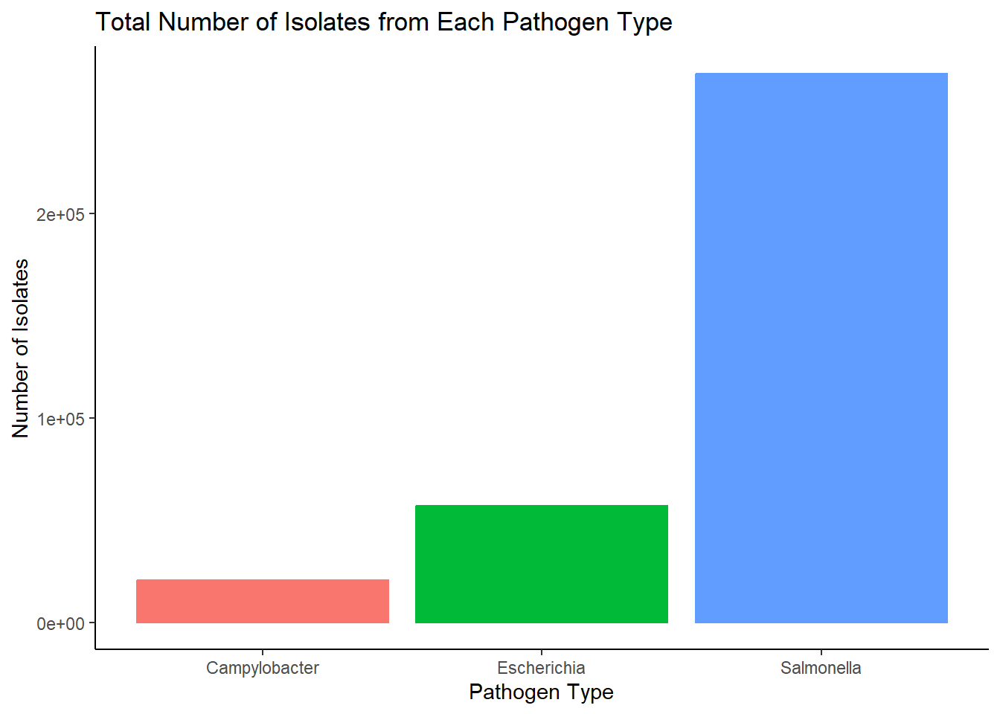
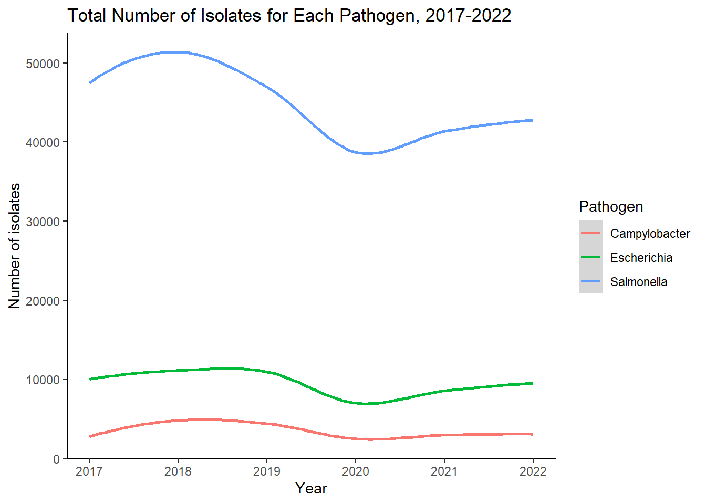

#load required packages
library(tidyverse)
library(here)
library(zoo)Data Analysis Exercise
BEAM Dashboard
About the Data
This dataset is part of the BEAM (Bacteria, Enterics, Amoeba, and Mycotics) Dashboard, collected by the System for Enteric Disease Response, Investigation, and Coordination (SEDRIC). It contains information on food- and water-borne pathogens circulating in the United States.
Loading Data
#load data
BEAM_data <- read_csv(here("dataanalysis_exercise", "data", "BEAM_Dashboard_-_Report_Data.csv"))Rows: 128342 Columns: 10
── Column specification ────────────────────────────────────────────────────────
Delimiter: ","
chr (4): State, Source, Pathogen, Serotype/Species
dbl (6): Year, Month, Number_of_isolates, Outbreak_associated_isolates, New_...
ℹ Use `spec()` to retrieve the full column specification for this data.
ℹ Specify the column types or set `show_col_types = FALSE` to quiet this message.glimpse(BEAM_data)Rows: 128,342
Columns: 10
$ Year <dbl> 2017, 2017, 2017, 2017, 2017, 2017, 20…
$ Month <dbl> 9, 9, 9, 9, 9, 9, 9, 9, 9, 9, 9, 9, 9,…
$ State <chr> "TX", "TX", "TX", "TX", "TX", "TX", "T…
$ Source <chr> "Stool", "Stool", "Stool", "Stool", "S…
$ Pathogen <chr> "Escherichia", "Escherichia", "Salmone…
$ `Serotype/Species` <chr> "Shigella Flexneri Serotype Undetermin…
$ Number_of_isolates <dbl> 1, 14, 1, 5, 1, 2, 2, 1, 2, 2, 1, 16, …
$ Outbreak_associated_isolates <dbl> NA, NA, NA, NA, NA, 2, NA, NA, NA, NA,…
$ New_multistate_outbreaks <dbl> NA, NA, NA, NA, NA, NA, NA, NA, NA, NA…
$ New_multistate_outbreaks_unique <dbl> NA, NA, NA, NA, NA, NA, NA, NA, NA, NA…Data Cleaning
Now that we have the data loaded, let’s tidy it up to get it ready for analysis. Thankfully, this is a relatively clean dataset, so wrangling it shouldn’t be too difficult.
First, I’m going to reclassify the categorical variables.
BEAM_data <- BEAM_data %>%
mutate(State = as.factor(State)) %>%
mutate(Source = as.factor(Source)) %>%
mutate(Pathogen = as.factor(Pathogen)) %>%
mutate(`Serotype/Species` = as.factor(`Serotype/Species`))
glimpse(BEAM_data) Rows: 128,342
Columns: 10
$ Year <dbl> 2017, 2017, 2017, 2017, 2017, 2017, 20…
$ Month <dbl> 9, 9, 9, 9, 9, 9, 9, 9, 9, 9, 9, 9, 9,…
$ State <fct> TX, TX, TX, TX, TX, TX, TX, TX, TX, TX…
$ Source <fct> Stool, Stool, Stool, Stool, Stool, Sto…
$ Pathogen <fct> Escherichia, Escherichia, Salmonella, …
$ `Serotype/Species` <fct> "Shigella Flexneri Serotype Undetermin…
$ Number_of_isolates <dbl> 1, 14, 1, 5, 1, 2, 2, 1, 2, 2, 1, 16, …
$ Outbreak_associated_isolates <dbl> NA, NA, NA, NA, NA, 2, NA, NA, NA, NA,…
$ New_multistate_outbreaks <dbl> NA, NA, NA, NA, NA, NA, NA, NA, NA, NA…
$ New_multistate_outbreaks_unique <dbl> NA, NA, NA, NA, NA, NA, NA, NA, NA, NA…I also want to group the total number of isolates of each pathogen for each year. This will help simplify the results and can be used for further analysis.
grouped_data <- BEAM_data %>%
group_by(Year, Pathogen) %>%
summarise(sum_isolates = sum(Number_of_isolates), .groups = 'drop')
glimpse(grouped_data)Rows: 18
Columns: 3
$ Year <dbl> 2017, 2017, 2017, 2018, 2018, 2018, 2019, 2019, 2019, 202…
$ Pathogen <fct> Campylobacter, Escherichia, Salmonella, Campylobacter, Es…
$ sum_isolates <dbl> 2756, 10017, 47477, 4813, 11108, 51385, 4414, 10943, 4695…Now that these variables are reclassified, I want to change the NA’s in a few columns to 0’s, which is more indicative of their actual value.
BEAM_data_clean <- BEAM_data %>%
replace(is.na(BEAM_data), 0)
glimpse(BEAM_data_clean)Rows: 128,342
Columns: 10
$ Year <dbl> 2017, 2017, 2017, 2017, 2017, 2017, 20…
$ Month <dbl> 9, 9, 9, 9, 9, 9, 9, 9, 9, 9, 9, 9, 9,…
$ State <fct> TX, TX, TX, TX, TX, TX, TX, TX, TX, TX…
$ Source <fct> Stool, Stool, Stool, Stool, Stool, Sto…
$ Pathogen <fct> Escherichia, Escherichia, Salmonella, …
$ `Serotype/Species` <fct> "Shigella Flexneri Serotype Undetermin…
$ Number_of_isolates <dbl> 1, 14, 1, 5, 1, 2, 2, 1, 2, 2, 1, 16, …
$ Outbreak_associated_isolates <dbl> 0, 0, 0, 0, 0, 2, 0, 0, 0, 0, 0, 2, 0,…
$ New_multistate_outbreaks <dbl> 0, 0, 0, 0, 0, 0, 0, 0, 0, 0, 0, 0, 0,…
$ New_multistate_outbreaks_unique <dbl> 0, 0, 0, 0, 0, 0, 0, 0, 0, 0, 0, 0, 0,…That will conclude the data cleaning I will be conducting. Perhaps more wrangling could have been done, but I think this is a good start and sets up some the next contributor fairly well.
#save processed data
BEAM_data_clean %>% saveRDS(here::here("dataanalysis_exercise", "data", "BEAM_data_clean.rds"))Exploring the Data
Now that the data is clean, I want to do some quick exploration of it before handing it off to the next contributor for a more complete analysis.
The following plots will help give a simple overview of what the data looks like without getting into any modeling.
ggplot(BEAM_data_clean, aes(Pathogen, Number_of_isolates, color=Pathogen))+
geom_col()+
labs(title = "Total Number of Isolates from Each Pathogen Type")+
xlab("Pathogen Type")+
ylab("Number of Isolates")+
theme_classic()+
theme(legend.position = "none")
ggplot(grouped_data, aes(Year, sum_isolates, color=Pathogen))+
geom_smooth()+
labs(title = "Total Number of Isolates for Each Pathogen, 2017-2022")+
xlab("Year")+
ylab("Number of isolates")+
theme_classic()
Data Analysis
There are many interesting questions that can be answered with this dataset. Among these, I am interested in:
The relationship between source and pathogen type and/or number of isolates
The relationship between serovar/species and outbreak association and/or number of new multistate outbreaks
The impact of state/year on the number of new multistate outbreaks
However, this dataset could be used to address many other questions, and I will leave that to the next contributor’s judgement. Looking forward to seeing how this data will be analyzed!